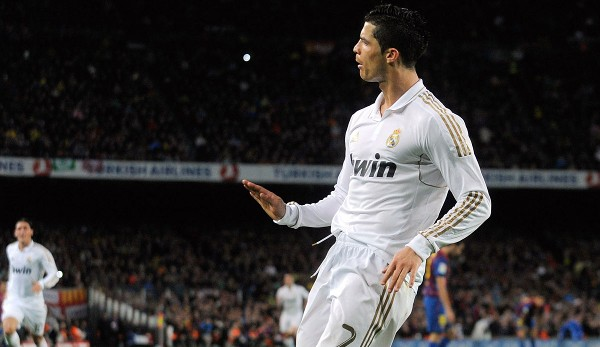

This website is created by me, Amanuel Isaak. I'm a fan of Real Madrid since 2014. I started watching since I was 9 years old. I was obssesed by the club. The was they played, the legends they had and still have, la Decima, legedary coaches and etc. They were eye catching and the players entertained in every competition.
Now I want to take the oppertiunity to share the favorite games. Sadly I wasn't lucky enough to watch any game in real life.
Super Copa Final 2017

The Copa del Rey final in 2017 was actually a two-legged affair between arch-rivals Real Madrid and Barcelona. In the first leg at the Santiago Bernabeu, Real Madrid dominated and emerged as 3-1 winners, thanks to goals from Lucas Vazquez, Isco, and Cristiano Ronaldo. Barcelona's lone goal was scored by Lionel Messi from the penalty spot. In the second leg at the Camp Nou, Barcelona needed to overturn the two-goal deficit to have any chance of lifting the trophy. However, Real Madrid held firm and produced a resolute defensive display to win the game 2-0. Marco Asensio scored an early goal to give Real Madrid the lead, before Karim Benzema doubled their advantage in the second half. Barcelona tried to mount a comeback, but Real Madrid's defense held strong and secured a famous victory. Real Madrid's triumph in the Copa del Rey final over Barcelona was a significant moment for Los Blancos and their fans, as they had beaten their bitter rivals in both legs of the competition.
El clasico 2012
The El Clasico match between Real Madrid and Barcelona in the 2011/12 La Liga season was a significant one for Real Madrid, as they defeated Barcelona 2-1 at the Santiago Bernabeu. Real Madrid took the lead through Sami Khedira's goal in the 17th minute, before Cristiano Ronaldo doubled their advantage with a superb finish just before half-time. Barcelona pulled one back through Alexis Sanchez in the second half, but Real Madrid held on for a crucial victory in the title race. The win also marked Real Madrid's first league victory against Barcelona in four years, and it helped them build a seven-point lead over their rivals at the top of the table. The match was notable for its high intensity and physicality, with both teams displaying their world-class talent and skills. It was also an important moment for Real Madrid in their pursuit of the La Liga title, as they eventually went on to win the league that season, ending Barcelona's three-year dominance in the competition. The match was also significant for Cristiano Ronaldo, who scored his 100th goal for Real Madrid in the game, cementing his status as one of the greatest players in the club's history.
UCL final 2017

The UEFA Champions League final in 2017 was contested between Juventus and Real Madrid at the National Stadium of Wales in Cardiff. The match was a one-sided affair, with Real Madrid delivering a dominant performance to secure a 4-1 victory and claim their twelfth European Cup/Champions League title in their history. Cristiano Ronaldo opened the scoring for Real Madrid with a superb finish in the 20th minute, before Mario Mandzukic equalized with a spectacular overhead kick for Juventus. However, Real Madrid took control of the game in the second half, with goals from Casemiro, Ronaldo, and Marco Asensio securing a comprehensive victory for Los Blancos. The win marked Real Madrid's third Champions League triumph in four years, and also saw them become the first team to successfully defend the title in the modern Champions League era. The match was a memorable one for Real Madrid fans, as they witnessed their team produce a scintillating performance on the biggest stage. Ronaldo's brace in the final also saw him become the first player to score in three different Champions League finals, and he finished the tournament as the top scorer with 12 goals.
Copa del rey semi-final 2023

It was a Copa España 2017 final. The game between Real Madrid and Barcelona. The first leg was played in Camp nou where Real Madrid himulated Barca 1-3.
UCL final 2014

The UEFA Champions League (UCL) final in 2014 was a thrilling match between Real Madrid and Atletico Madrid. After a goalless first half, Diego Godin put Atletico ahead in the second half. However, Sergio Ramos scored a dramatic equalizer for Real Madrid in injury time to send the game into extra time. In the additional 30 minutes, Real Madrid dominated and goals from Gareth Bale, Marcelo and a penalty from Cristiano Ronaldo secured a 4-1 victory for Los Blancos, their tenth European Cup/Champions League title in their history. It was a memorable night for Real Madrid fans and a heartbreak for Atletico Madrid, who came so close to their first ever Champions League triumph.